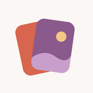

LeveInformativa sulla privacy
Ultimo aggiornamento: 11 novembre 2026
Leve è un’app per passare in rassegna le foto e i video del telefono e liberare spazio. È fatta perché le tue foto non lascino mai il dispositivo. Questa pagina spiega quali dati usa e cosa ne fa.
- Leve non raccoglie né invia dati personali. Niente account, niente pubblicità e niente statistiche d’uso.
- Le tue foto e i tuoi video vengono letti sul telefono e non lo lasciano.
- Quello che l’app salva resta sul tuo dispositivo e viene cancellato quando la disinstalli.
Cosa legge l’app
Con il tuo permesso, Leve legge le foto e i video della tua galleria e i loro dati di base: dimensione, data, risoluzione, durata, nome del file, album e se sono preferiti. Li usa solo per mostrarteli, calcolare quanto spazio puoi liberare e ricordare quali hai già visto. Se dai accesso solo ad alcune foto, Leve vede solo quelle.
Su Android legge anche lo spazio totale e libero della memoria, per mostrarti quanto hai liberato.
Cosa salva e dove
Dentro l’app, sul tuo telefono, Leve salva l’elenco di foto e video con quei dati, cosa decidi per ognuno (tenere, cestino o dopo), i tuoi progressi (obiettivo giornaliero, serie e traguardi) e le tue impostazioni. Niente di tutto questo lascia il dispositivo o viene condiviso con qualcuno.
Tutto viene cancellato quando disinstalli l’app, e puoi azzerare i progressi dalle Impostazioni. Se hai attivo il backup del sistema (di Google o di iCloud), il sistema può includervi questi dati, come per qualsiasi altra app. Leve non ha accesso a quei backup.
Cosa Leve non fa
Niente account né accesso, niente pubblicità e nessuna statistica d’uso, tracciamento o strumento di terze parti che raccolga dati. Su Android non ha nemmeno il permesso di connettersi a internet. Non vende né condivide dati con nessuno, perché non ne ha.
Eliminazione delle foto
Leve elimina solo ciò che metti nel suo cestino e poi confermi, e sempre con la finestra di conferma del sistema.
Su Android, foto e video vengono eliminati dal telefono. Le copie che hai su Google Foto o su un altro cloud restano lì.
Su iPhone e iPad finiscono in «Eliminati di recente», in Foto, dove restano 30 giorni. Se usi Foto di iCloud, vengono eliminati anche da iCloud e dagli altri tuoi dispositivi.
Foto di iCloud
Se usi Foto di iCloud con «Ottimizza spazio», iOS può scaricare da iCloud le foto che non sono sul dispositivo perché Leve te le mostri. Questo download lo fa il sistema di Apple, non Leve, e non viene inviato niente di nuovo a nessuno.
Promemoria
Se passano alcuni giorni senza aprire Leve, l’app può mostrarti fino a quattro avvisi su cosa ti resta da rivedere o liberare. Vengono preparati e mostrati sul tuo telefono, con i dati che ci sono già: non passano da nessun server e non inviano nulla. Contengono solo numeri, mai foto o nomi di file. Puoi disattivarli nelle impostazioni di Leve o in quelle delle notifiche del telefono.
Valutazioni
Ogni tanto Leve può mostrare la finestra di valutazione di Google Play o dell’App Store. Quella finestra è dello store: Leve non sa se l’hai vista né cosa hai scritto. Google o Apple trattano ciò che scrivi secondo la loro informativa sulla privacy.
Minori
Leve non è pensata per i bambini. Non raccoglie dati di nessuno, nemmeno dei minori.
Modifiche
Se questa informativa cambia, la nuova versione sarà pubblicata in questa pagina con la sua data.
Contatti
Leve è sviluppata da carloscgm. Per qualsiasi domanda sulla privacy, scrivi a carloscgm.dev@gmail.com.